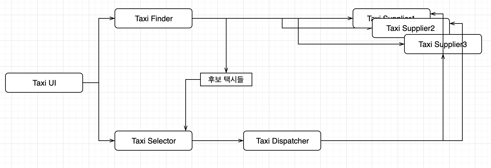
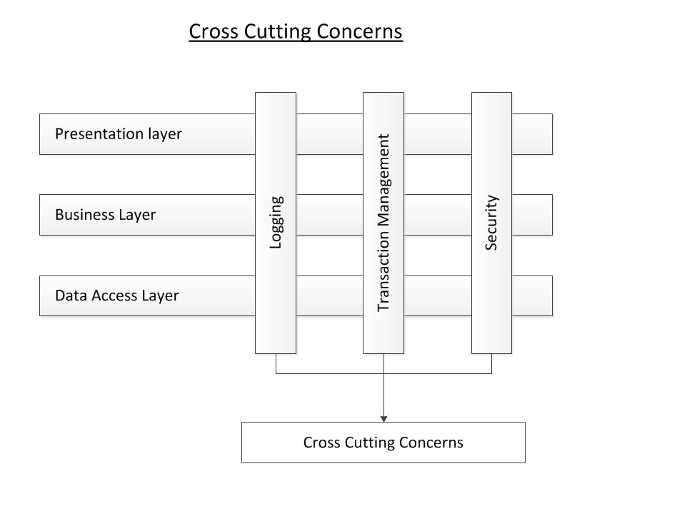
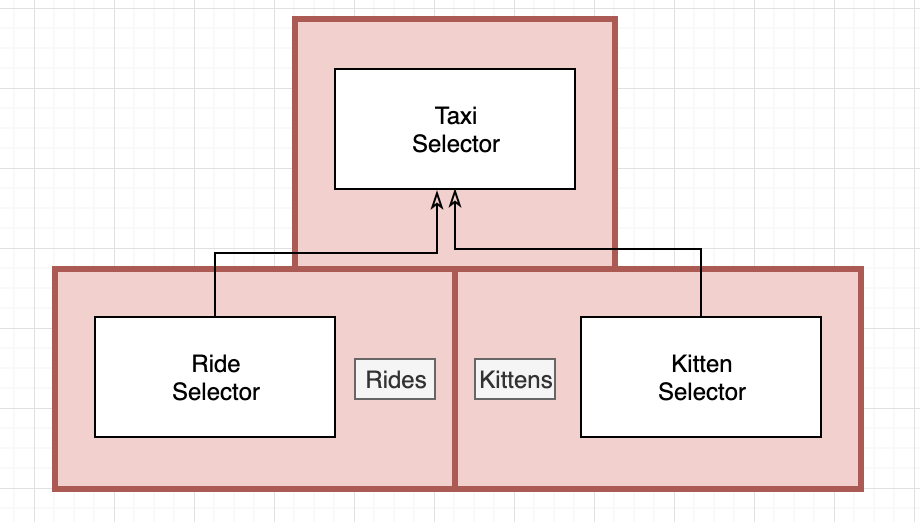

“CleanArchitecture 27장”
서비스 지향 ‘아키텍처’ , 마이크로서비스 ‘아키텍처’

SOA, MSA 더 알아보기 : https://dzone.com/articles/microservices-vs-soa-whats-the-difference
SOA, MSA 더 알아보기 2 : http://blog.naver.com/PostView.nhn?blogId=stmshra&logNo=221446919085&parentCategoryNo=&categoryNo=73&viewDate=&isShowPopularPosts=true&from=search
서비스 아키텍처?
- 단순히 애플리케이션의 행위를 분리할 뿐인 서비스라면 값비싼 함수 호출에 불과
- 기능을 프로세스나 플랫폼에 독립적이게 서비스들을 생성하면 의존성 규칙 준수 여부와 상관없이 큰 도움이 됨
- 그러나 서비스 자체로는 아키텍처를 정의하지 않음
서비스는 프로세스나 플랫폼 경계를 가로지르는 함수 호출에 지나지 않는다.
서비스 이점?
결합 분리의 오류
시스템을 서비스로 분리함으로써 얻게 되는 가장 큰 이점 -> 서비스 사이의 결합이 확실히 분리
- 서로 다른 프로세서에서 실행되며 다른 서비스의 변수에 직접 접근 할 수 없음
- 모든 서비스의 인터페이스는 잘 정의되 있어야함
‘’그러나, “
- 개발 변수 수준에서는 각각의 결합이 분리 -> 그러나 프로세서 내의 또는 네트워크 상의 공유 자원 떄문에 결합될 가능성이 존재
- 서로 공유하는 데이터에 의해 서비스들이 강력하게 결합
ex) 서비스들 사이를 오가는 데이터 레코드에 새로운 필드 추가 -> 이필드를 사용해 동작하는 모든 서비스는 반드시 변경 되어야 함
서비스들은 데이터 레코드에 강하게 결합, 서비스들 사이는 서로 간접적으로 결합
- 인터페이스가 잘 정의되어 있어야 한다는 이점은 분명하지만 함수인터페이스보다 서비스 인터페이스가 더 엄격하고 더 잘 정의되는 것은 아님
개발 및 배포 독립성의 오류
시스템을 서비스로 분리함으로써 얻게 되는 가장 이점 -> 전담팀이 서비스를 소유하고 운영
데브옵스
- 소프트웨어의 개발(Development)과 운영(Operations)의 합성어
- 소프트웨어 개발자와 정보기술 전문가 간의 소통, 협업 및 통합을 강조하는 개발 환경이나 문화
- 전담팀에서 각 서비스를 작성, 유지보수, 운영하는 책임을 짐
데브옵스 더 알아보기 : https://blog.sonim1.com/231
개발 및 배포 독립성은 확장 가능한 것으로 간주되며 대규모 엔터 프라이즈 시스템을 독립적으로 개발하고 배포 가능한 수많은 서비스들을 이용하여 만들 수 있다는 믿음을 준다.
‘’그러나, ‘’
- 대규모 엔터프라이즈 시스템은 서비스 기반 시스템 이외에도 모노리틱 시스템 또는 컴포넌트 기반 시스템으로도 구축할 수 있음
- 서비스는 확장 가능한 시스템을 구성하는 유일한 선택지가 아님
- 서비스라고 해서 항상 독립적으로 개발하고, 배포하며, 운영할 수 있는 것은 아님
- 데이터나 행위에 대해 어느정도 결합되 있다면 개발, 배포, 운영을 조정해야 함
야옹이 문제

Taxi UI - 고객 담당, 고객은 모바일 기기를 이용해 택시 호출
TaxiFinder - Taxi Supplier 현황을 검토하여 사용자에게 적합한 택시 후보들을 선별
TaxiSelector - 택시를 TaxiDispatcher로 전달
TaxiDispatcher - 해당 택시에 배차 지시
확장 가능성을 위해 위처럼 수많은 작은 마이크로 서비스를 기반으로 한 택시 통합 시스템이 있다면
도시에 야옹이를 배달하는 서비스를 위해 어느 서비스를 수정해야 할까?
위 서비스들은 모두 결합되어 잇으며 독립적으로 개발하고 배포하거나 유지될 수 없다.

이게 바로 “횡단 관심사”가 지닌 문제다. 모든 소프트웨어 시스템은 서비스 지향이든 아니든 이 문제에 직면하게 된다.
객체가 구출하다
컴포넌트 기반 아키텍처라면? 다형적으로 확장할 수 있는 클래스의 결합을 생성하여 새로운 기능을 처리
.jpeg)
- 서비스들과 거의 일치
- 원래 서비스의 로직 중 대다수가 객체 모델의 기반 클래스들 내부로 녹아듬
- 배차 - Rides 컴포넌트로 추출
- 야옹이 신규기능 - Kittens 컴포넌트로 추가
- 두 컴포넌트는 기존 컴포넌트 들에 있는 추상 기반 클래스를 템플릿 메서드나 전략 패턴 등을 이용해 오버라이드함
- 두 컴포넌트는 의존성 규칙을 준수
- 야옹이 기능을 구현한 새로운 jar 파일이나 DLL을 시스템에 추가하고 런타임에 동적으로 로드
- 야옹이 기능은 결합이 분리되며 독립적으로 개발하여 배포 할 수 있음
컴포넌트 기반 서비스
서비스는 SOLID 원칙대로 설계하고 컴포넌트 구조를 갖출 수 있다. 이를 통해 서비스 내의 기존 컴포넌트를 변경하지 않고도 새로운 컴포넌트를 추가할 수 있다.
자바의 경우 서비스를 하나 이상의 jar 파일에 포함되는 추상 클래스들의 집합이라고 생각하라.
- 새로운 기능 추가, 기능 확장 -> 새로운 jar 파일
- 새로운 jar 파일을 구성하는 클래스들은 기존의 jar 파일에 정의된 추상 클래스들을 확장하여 생성
.jpeg)
각 서비스 내부는 자신만의 컴포넌트 설계로 파생 클래스를 만드는 방식으로 신규 기능을 추가할 수 있다. 파생 클래스들은 각자의 컴포넌트 내부에 위치한다.
횡단 관심사
아키텍처의 경계는 서비스 사이에 있지 않다. 오히려 서비스를 관통하며, 서비스를 컴포넌트 단위로 분리한다.
따라서 서비스 내부는 의존성규칙도 준수하는 컴포넌트 아키텍처로 설계해야 한다. 아키텍처 경계를 정의하는 것은 서비스 내에 위치한 컴포넌트 이다.

결론
- 서비스는 시스템의 확장성과 개발 가능성 측면에서 유용
- 그 자체로 아키텍처 적으로 중요한 요소가 아님
시스템 아키텍처는 시스템 내부에 그어진 경계와 경계를 넘나드는 의존성에 의해 정의된다. 시스템의 구성 요소가 통신하고 실행되는 물리적인 메커니즘에 의해 아키텍처가 정의되는 것은 아니다.